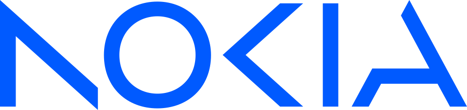
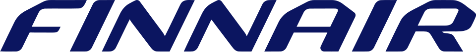

핀란드 브랜드 14
핀란드에서 시작한 브랜드 14개를 로고와 함께 모았습니다. 대표적인 핀란드 브랜드로는 노키아(Nokia), 핀에어(Finnair), VR 그룹(VR Group), 코네(Kone), HMD 글로벌(HMD Global), 순토(Suunto) 등이 있습니다. 수록 기준은 검수된 브랜드 설명이나 공식 웹사이트가 일치하는 위키데이터 개체에서 기원 국가가 확인된 경우로 한정했습니다.
다른 국가 보기
국가별 전체 →산업별로는 기술·전자 4개, 모빌리티 3개, 식음료 3개, 에너지·산업재 2개 순입니다. 설립연도가 확인된 브랜드는 14개이며 가장 오래된 곳은 1834년, 가장 최근은 2015년에 시작했습니다. 시기별로는 1900년 이전 5개, 1900~1949년 3개, 1950~1999년 4개, 2000년 이후 2개입니다. 수록 자료로는 로고 이미지 13개를 갖췄습니다. 이 가운데 14개는 공식 웹사이트가 일치하는 위키데이터 개체로 연결해 두었습니다.
핀란드 브랜드 목록
 VR 그룹VR Group핀란드 · 1995년
VR 그룹VR Group핀란드 · 1995년VR 그룹(VR Group)은 핀란드 정부가 소유한 철도 회사이다.
 코네Kone핀란드 · 1910년
코네Kone핀란드 · 1910년코네(Kone)는 1910년 설립되어 핀란드 에스포에 본사를 둔 기업으로, 엘리베이터와 에스컬레이터, 무빙 워크 등을 제조·판매하고 유지 보수…
 HMD 글로벌HMD Global핀란드 · 2015년
HMD 글로벌HMD Global핀란드 · 2015년HMD 글로벌(HMD Global)은 노키아 전 직원들이 설립한 핀란드의 이동통신 제품 개발·판매 기업이다.

노키아Nokia핀란드 · 1865년노키아(Nokia)는 핀란드 에스포에 본사를 둔 글로벌 통신 네트워크 솔루션 회사이다.
 순토Suunto핀란드 · 1936년
순토Suunto핀란드 · 1936년순토(Suunto)는 1936년 설립된 핀란드의 기업으로, 스포츠 워치, 다이브 컴퓨터, 나침반, 정밀 기기를 제조하고 판매한다.
노키안 타이어Nokian Tyres핀란드 · 1987년노키안 타이어(Nokian Tyres)는 핀란드의 도시 노키아에 본사를 둔 타이어 제조사이다.
 마리메꼬Marimekko핀란드 · 1951년
마리메꼬Marimekko핀란드 · 1951년마리메꼬(Marimekko)는 1951년 헬싱키에서 설립된 핀란드의 텍스타일·의류·홈 퍼니싱 기업이다.
 욜라Jolla핀란드 · 2011년
욜라Jolla핀란드 · 2011년욜라(Jolla)는 핀란드의 기술 기업으로, 모바일 운영체제 Sailfish OS를 개발하고 공급한다.

핀에어Finnair핀란드 · 1923년핀에어(Finnair)는 핀란드에 본사를 둔 항공사이다.
 바르질라Wärtsilä핀란드 · 1834년
바르질라Wärtsilä핀란드 · 1834년바르질라(Wärtsilä)는 해양 및 육상발전시장에 필요한 에너지 관련 장비를 생산하고 서비스를 제공하는 핀란드 기업이다.
 F-시큐어F-Secure핀란드 · 1988년
F-시큐어F-Secure핀란드 · 1988년F-시큐어(F-Secure)는 핀란드 헬싱키에 본사를 둔 사이버 보안·프라이버시 기업이다.
 Olvi핀란드 · 1878년
Olvi핀란드 · 1878년Olvi는 1878년 설립된 핀란드의 양조 및 청량음료 회사이다.
 Hartwall핀란드 · 1838년
Hartwall핀란드 · 1838년Hartwall은 핀란드 헬싱키에 본사를 둔 음료 회사이다.
라핀 쿨타(Lapin Kulta)는 핀란드의 맥주 브랜드이다.